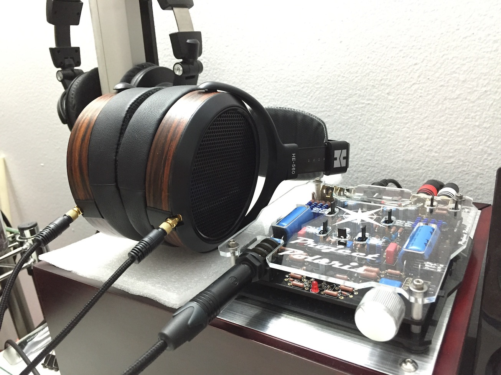
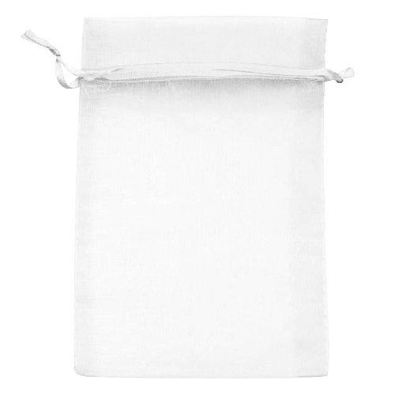
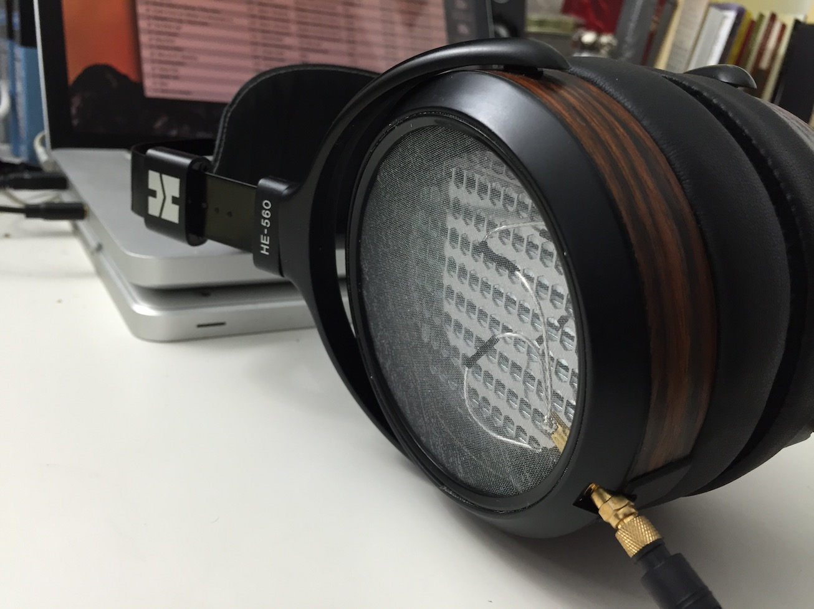

Hifiman HE-560 Grill Mod
Hifiman’s HE-560 headphones are a highly popular model of open-backed high-end headphones amongst audiophiles for their purely neutral sound signature, speed, and soundstage, thanks to their planar magnetic drivers. The planar magnetic drivers also lend the headphones the most well-extended, punchy, and linear bass I’ve ever heard, whether headphones or speakers.
As seen above, they sport a thick mesh steel grill on the sides of the earcups, allowing ventilation for the planar magnetic drivers while offering a very good degree of dust and physical protection.
However, one of my friends found that when the steel grill was removed on his pair of HE-560s, the soundstage opened up even more and the headphone’s sound relaxed as a whole, resulting in a more immersive and enjoyable experience. However, the removal of the grill left his headphones very vulnerable to dust and unsuspecting fingers. He would cautiously store them on his desk draped in cloth and only let others use them when he was around.
Wanting to have the best of both worlds, I set out to re-grill the HE-560 to achieve the more open sound while still protecting the fragile planar magnetic drivers from dust and physical damage from unsuspecting fingers.
The new grill material would need to allow as much sound passage as possible while still filtering dust and having some semblance of physical strength.
My answer came in the form of organza bags, frequently used as bags for party favors and wedding mementos. These bags were made of thin strong polymer fibers weaved into a small mesh. This was perfect! Though the holes in the mesh were smaller than those on the original steel grill, they were far more numerous and thus the amount of material actually blocking and reflecting sound back to the driver was far less.
The major issue to address now was how to package this mesh in a form factor that could stay in the headphone’s earcups. The original grills were a rigid steel plate with a thin dust protection mesh adhered to one side, which would fit into a recess in the earcups and were secured with a plastic retaining ring that locked into the earcups with four tabs.
Initially I tried to sew a cut circle of organza mesh to a ring that I soldered to size from spring wire. Unfortunately, the mesh and the wire were both too fine to sew together without cutting through the mesh with either the wire or the thread.
I then tried to glue the organza mesh to the spring wire ring with cyanoacrylate, but again, the mesh and wire were too fine to suitably bond the two together.
After a few days of classes while mulling over the problem, I realized that the organza mesh’s problem of fineness could be used as a solution. I left the organza uncut and layered it over the headphone with the grill and retaining ring removed. Using the retaining ring’s mounting tabs, I was able to fit the organza between the retaining ring and the earcup (due to its thinness), thus firmly anchoring the organza to the earcup without damaging it. After pulling the organza taut, I fully reinstalled the retaining ring, holding the organza sheet in place. I then used a razor to trim off the excess organza. This is the final product:
Looks and sounds pretty good!